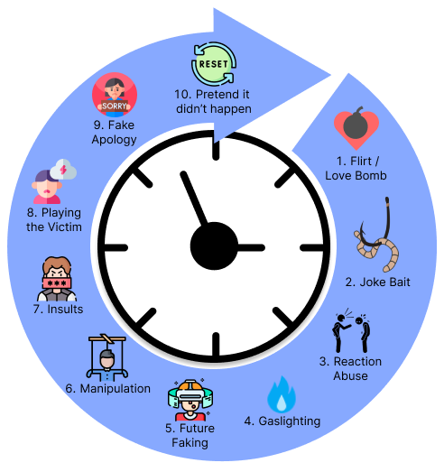

Zero Trust, Zero Tolerance
2024-04-06
What is Zero Trust?
The zero trust security model describes an approach to implementing IT systems.
The main concept behind the zero trust security model is "never trust, always verify". This means that users and devices should not be trusted by default, even if they were previously verified.
What is Zero Tolerance?
A zero-tolerance policy is used to describe consequences for misconduct and rule-breaking.
The idea is that by enforcing consequences that show little tolerance for perpetrators, your company will create a safe workplace and productive environment where every employee knows exactly what's expected of them.
Personal Life
“When someone shows you who they are, believe them the first time.” ~ Maya Angelou
I use a zero trust and zero tolerance model in my personal life to protect me from users and abusers. I'm upfront and clear about my boundaries and the consequences for crossing them. I watch people's behavior over time looking for patterns. Their true motivations and goals bleed through eventually. If they are purposefully rude or try to exploit me, they are immediately cut out of my life. No discussion, no second chances, that door is closed.
Mindset and Worldview
I have a growth mindset. I use verified information to update my existing knowledge and skills.
I have an abundant worldview. I know there is more than enough of what I want to go around.
I remain calm, skeptical, take time to think critically, and ask questions. I attempt to verify information and claims before accepting them as facts. If it cannot be verified, it is not accepted.
I prefer to be alone than with people I cannot trust.
Values
Here’s a list of character traits I value.
- Logic and Reason
- Critical Thinking
- Evidence-based decision-making
- Maturity
- Kindness
- Patience
- Respect
- Honesty
- Integrity
- Cooperation
- Self-Control
- Self-Discipline
- Skills and Knowledge
Culture
Our culture is based on delusional prideful arrogance, greed, vanity, and competition for dominance. Their measure of happiness is tied to their status and income.
These negative views and behaviors are pointless on a long enough timeline. I do not know my ancestors who lived 100 years ago. No one will remember me 100 years from now.
It is better to refuse to play this game and become self-contained and self-sufficient than to engage with people who have accepted the current degenerate cultural programming.
Abuse Cycle
There is never any excuse for being disrespectful, rude, exploitive, or abusive.
Some people suffer from mental health issues, like NPD, that cause them to be abusive. For them every interaction is an opportunity to use and/or abuse people.
They lack empathy, feel superior, crave power, control, and dominance.
People with these kinds of mental health issues will never change and cannot be reasoned with. The best solution is to spot them early and not allow them into your life. The second best solution is to identify people in your life who behave in abusive ways and cut them off completely.
Their goal is to establish themselves as the dominant authority and decision-maker in your life. They want you to fear upsetting them. Don’t ask questions, don’t think for yourself, or expect anything in return. Do as you're told and give them what they want.
What people with NPD want:
- Attention
- Validation
- Admiration
- Dominance
Here is a common pattern of abuse to look for:

- Flirt / Love Bomb = Insincere affectionate behavior designed to make the target feel loved and wanted so they lower their defenses.
- Joke Bait = Bait comments or jokes meant to get an negative emotional response that the instigator can react to as a victim.
- Reaction Abuse = The instigator gets upset and blames the responder. Because the instigator was only joking but the responder was being serious.
- Gaslighting = An attempt to trick the target into disbelieving their own senses and perception of what is true.
- Future Faking = Pretending to offer something in the future in exchange for something now.
- Manipulation = Attempting to influence or control a target for personal gain at their expense.
- Insults (includes shaming) = Disrespectful, offensive, or derogatory words designed to hurt the targets feelings in an accusatory way.
- Playing the Victim = Pretending to be a victim to gain attention, jusifty abuse, deflect accountability, and/or control a target.
- Fake Apology = An insincere apology designed to avoid responsibility and downplay their abusive behavior.
- Reset / Pretend it didn't happen = Refusing to acknowledge their abusive behavior. Or saying, "It's in the past. Let it go".
This cycle of abuse can spin fast over the course of hours. Or it can spin slowly over years. It depends on the intensity of mental illness within the perpetrator. Knowing what users and abusers are after and their common tactics makes it easier to stop them.
Rules of Conduct
One of the best ways to deter users and abusers from entering your life is to have a written "Rules of Conduct" document.
Every company has "Rules of Conduct". This is a list of unacceptable words and actions that are banned in the workplace.
I think every person has a list of words and actions they find unacceptable from others.
Writing down a list and making your boundaries clear in the beginning of relationships can prevent future misunderstandings and arguments. In some cases, it can reveal conflicting values and incompatibilities before people waste time and effort getting invested. This applies to all kinds of relationships.
Below are my "Rules of Conduct" which are meant to protect me and create respect-based relationships.
Restrictions
The following restrictions apply to everyone who wants to interact with me.
- Must be at least 25 years old, because I cannot stand immaturity.
- I don’t tolerate delusional people with mental health issues.
- I don’t tolerate disrespect, insults, sarcasm, or rude behavior.
- I don't tolerate people who attempt to control me.
- I don’t allow people around me who try to get something for nothing.
- I don’t listen to people complain about their problems.
- I don’t allow racism, sexism, or discrimination of any kind.
- I don’t smoke, drink, or use drugs. Or, allow people around me who do.
- I don’t allow pets around me because I have allergies.
- I don’t lend my things or loan money.
Divisive Topics
I refuse to waste time debating divisive topics that pull people apart.
- Religion = There is no bridge between Faith and Evidence.
- Morals and Ethics = Talk to a philosopher.
- Politics = Talk to a politician.
- Sports = I’m a nerd, not an athlete.
Discussion Topics
You might be wondering, “What can we talk about?” Here’s a list of topics I like talking about.
- Entrepreneurship or Small Business
- Graphic Design and UI Design
- Technology
- Linux
- Retro Games: NES, SNES, GBA
- YouTube
- TV Shows
- Movies
- Cartoons and Anime
- Food
Problems
I refuse to take on other people’s problems. Not my circus, not my monkeys. Being an adult means being self-contained and self-sufficient. Learn to troubleshoot, make rational decisions, and solve your problems. Or, be willing to pay someone to do it for you.
Something For Nothing
I do not work for free. Those with mental health issues who feel entitled to use and abuse people as a way to get something for nothing. You are barking up the wrong tree when talking to me. Go kick rocks and pound sand. I will see through your mask and mind games and cut you out of my life. Don't waste my time.
Zero Trust, Zero Tolerance!